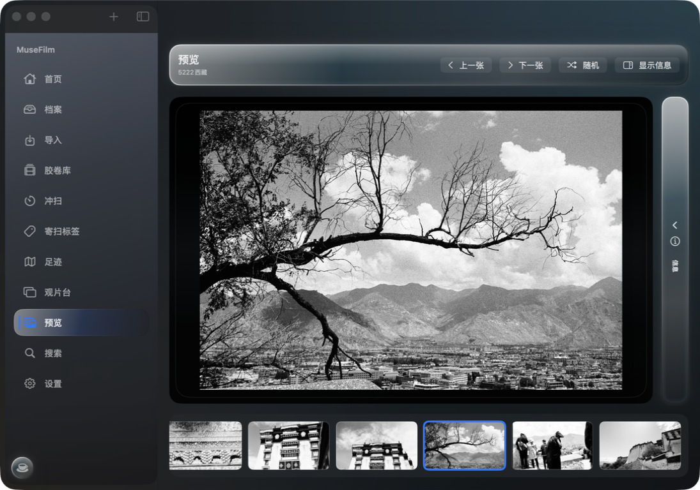
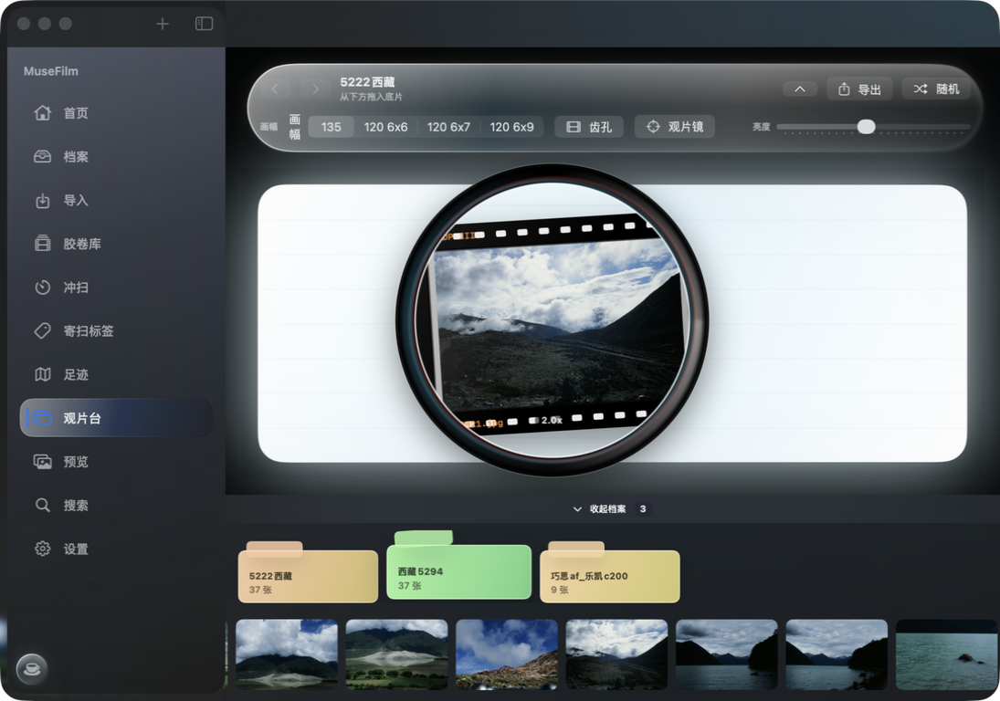
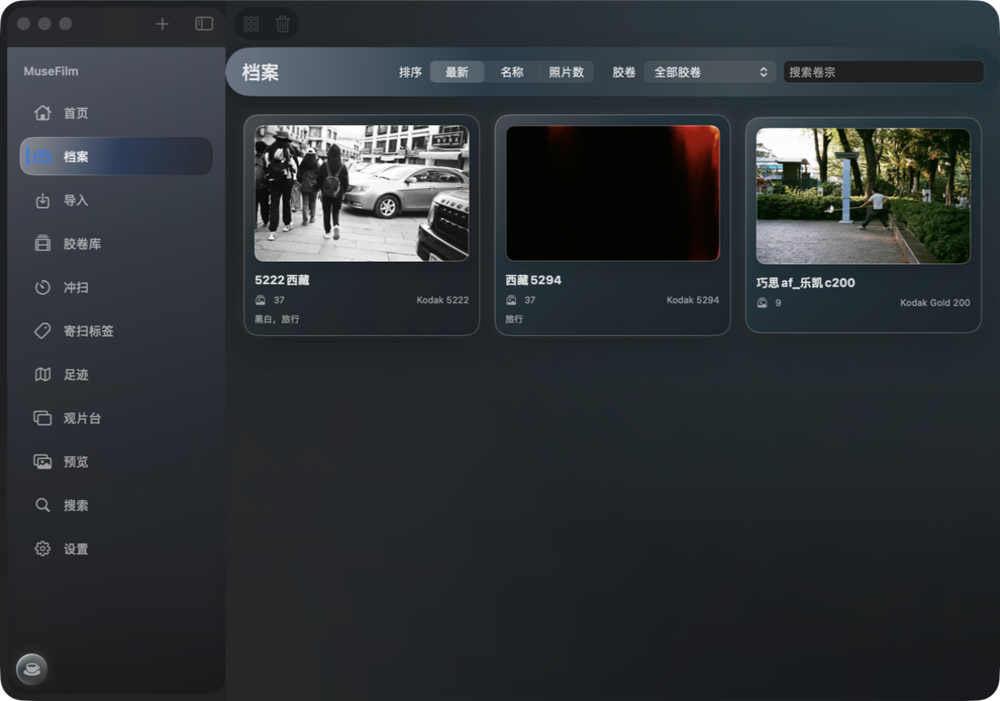
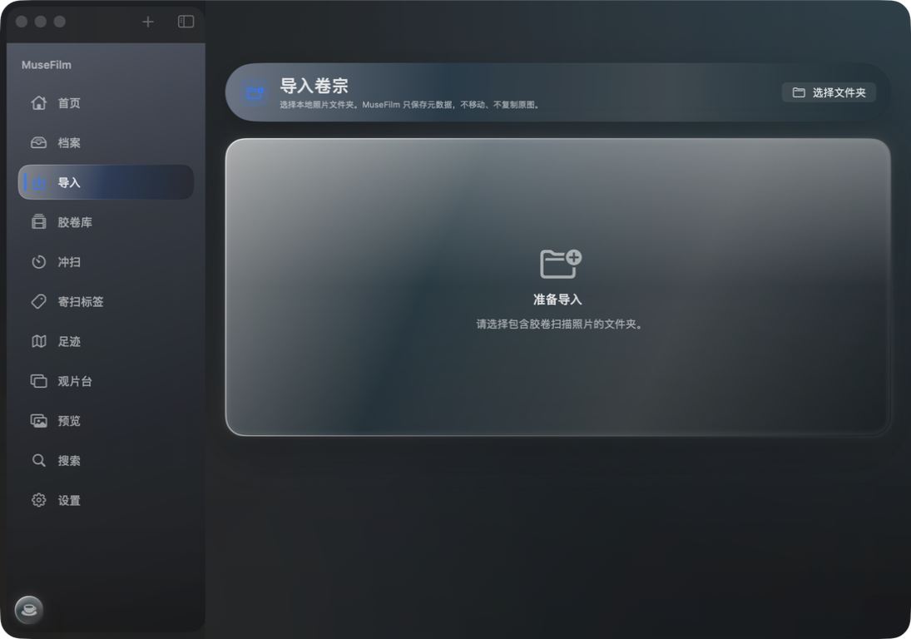
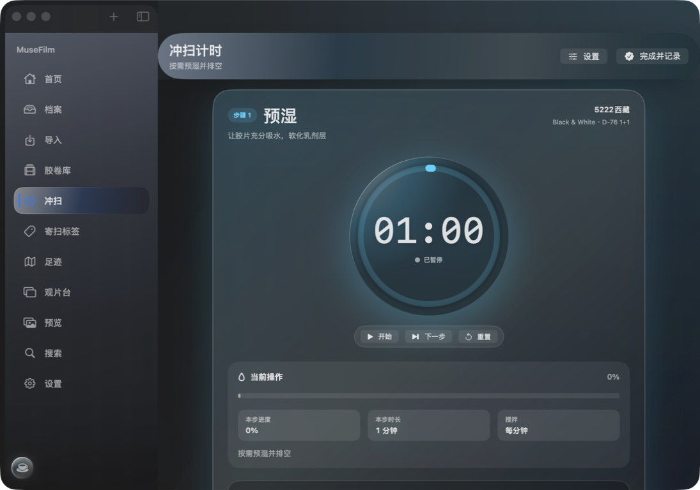
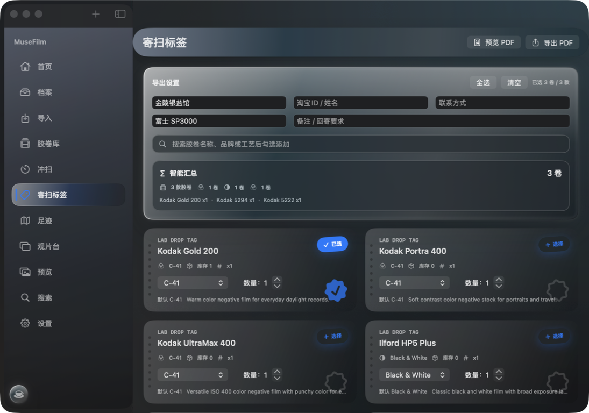
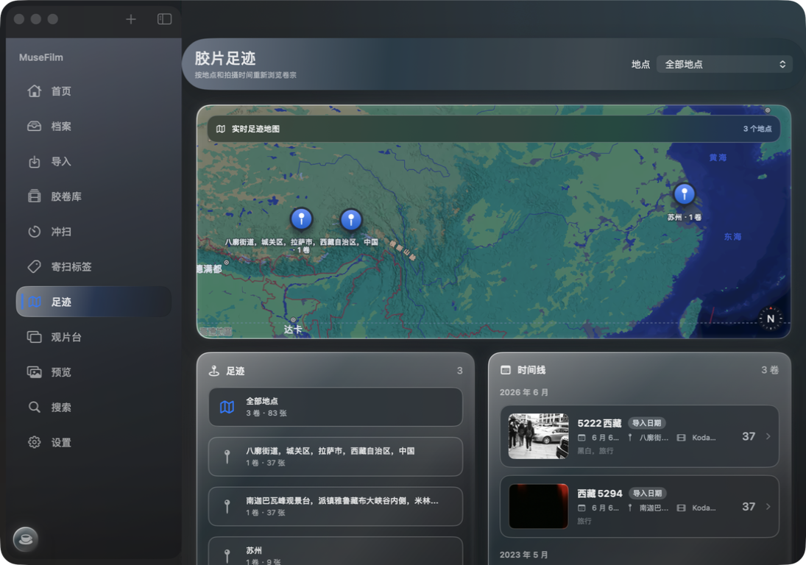
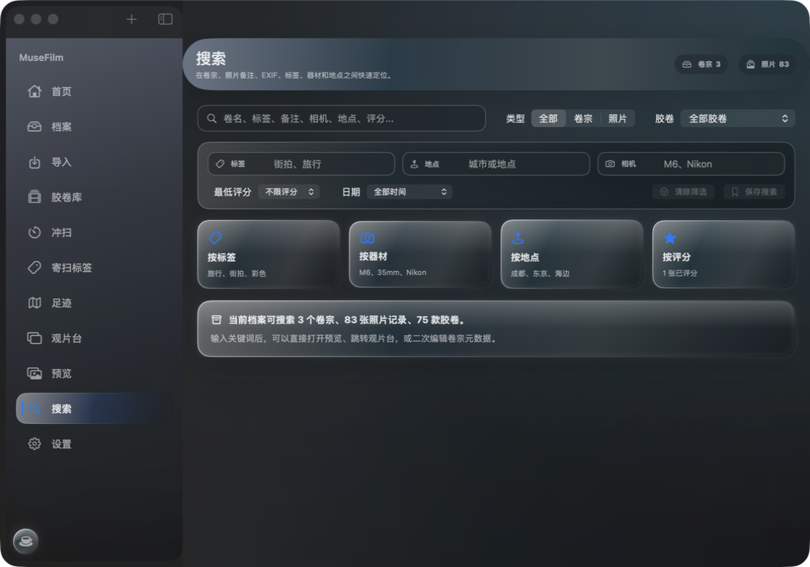
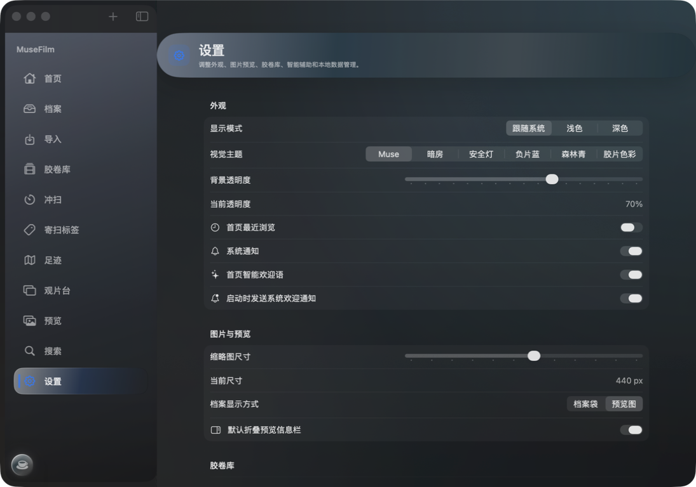

NavigationSplitView
首页、档案、导入、胶卷库、冲扫、寄扫标签、足迹、观片台、预览、搜索和设置都放在原生侧边栏中。
MuseFilm for Mac
原生 SwiftUI、侧边栏导航、Liquid Glass 视觉和更贴近 macOS 的窗口体验。 每一卷、每一张、每一次冲扫，都以更安静、更清晰的方式被保存。
Apple-inspired interface
Mac 版把玻璃效果留给侧边栏、顶部工具条、筛选器和悬浮信息面板。 照片、EXIF、冲扫步骤和设置表单保持足够对比度，让影像内容始终是主角。


Native Mac workflow
首页、档案、导入、胶卷库、冲扫、寄扫标签、足迹、观片台、预览、搜索和设置都放在原生侧边栏中。
保留本地优先理念，并适配 macOS 沙盒、安全作用域书签和重新定位照片目录的迁移场景。
按地点和拍摄时间重新浏览卷宗，用地图与时间线把胶片旅行连接起来。
把黑白冲洗流程拆成步骤、时间、搅拌节奏和记录，减少手忙脚乱的暗房时刻。
Download for macOS
当前 Mac 安装包为 2.0 build 2。顶部显示 Windows 与 Mac 的总下载次数，Mac 下载次数独立记录。
macOS 原生版本 · build 2 · 2026-06-06
Mac screenshots







MuseFilm